| Kelompok [Nama / Nomor Kelompok] | |
|---|---|
| Nama | NRP |
| [Nama Anggota 1] | [NRP] |
| [Nama Anggota 2] | [NRP] |
| [Nama Anggota 3] | [NRP] |
Final project kelompok kami adalah model 3D interaktif Kantin dan Hall Komunal Asrama Mahasiswa ITS. Model ini mencakup area lesehan, deretan kedai makanan, sayap meja baja, tangga putar menuju mezanin, kantor asrama berdinding kaca, dan area luar (taman, parkir motor, gedung asrama di sekitarnya). Model dibangun berdasarkan foto referensi yang kami ambil langsung di lokasi.
Laporan ini mendokumentasikan eksplorasi graphics library (GL) yang kami pakai, yaitu Three.js. Eksplorasi dilakukan dengan dua cara:
praktikum-threejs-06/eksplorasi/). Ada enam halaman kecil, masing-masing menguji satu kemampuan library secara terisolasi.Kami membandingkan tiga opsi untuk merender grafik 3D di browser:
| Kriteria | WebGL murni | Babylon.js | Three.js (dipilih) |
|---|---|---|---|
| Tingkat abstraksi | Sangat rendah: buffer, shader, dan matriks ditulis sendiri | Tinggi, berupa engine lengkap | Menengah: scene graph + material siap pakai, tetapi shader tetap bisa diubah |
| Kurva belajar | Curam | Sedang | Landai, banyak contoh resmi |
| Kontrol atas pipeline | Penuh | Sedang | Tinggi: onBeforeCompile, ShaderMaterial, post-processing |
| Ukuran dan ekosistem | — | Besar | Ringan, addon lengkap (controls, loader, postprocessing, utils) |
Three.js kami pilih karena konsep dasar grafika komputer (scene graph, transformasi, kamera, material, pencahayaan, shader) tetap terlihat jelas di kodenya, tetapi kami tidak perlu menulis ulang hal-hal dasar seperti pemuatan buffer atau shadow mapping. Proyek dijalankan dengan Vite sebagai dev server dan bundler (Three.js r0.186, Vite 8).
npm create vite@latest praktikum-threejs-06 -- --template vanilla cd praktikum-threejs-06 && npm install three npm run dev # http://localhost:5173 (demo: /eksplorasi/01-dasar.html, dst.)
Setiap aplikasi Three.js terdiri dari Scene (pohon objek), Camera (di sini PerspectiveCamera dengan FOV 50°), dan WebGLRenderer. Kami mencoba primitif bawaan (Box, Sphere, Cylinder, Cone, Torus) dan OrbitControls untuk memutar kamera. Kami juga membuat objek gabungan dengan THREE.Group: meja dari satu daun meja dan empat kaki. Transformasi pada Group otomatis diturunkan ke semua anaknya, sama seperti hierarki transformasi di materi kuliah.
const table = new THREE.Group(); const top = new THREE.Mesh(new THREE.BoxGeometry(2, 0.08, 1), wood); top.position.y = 0.75; table.add(top); // + 4 kaki (BoxGeometry tipis) table.position.set(0, 0, -3); table.rotation.y = 0.35; // memutar seluruh meja sekaligus
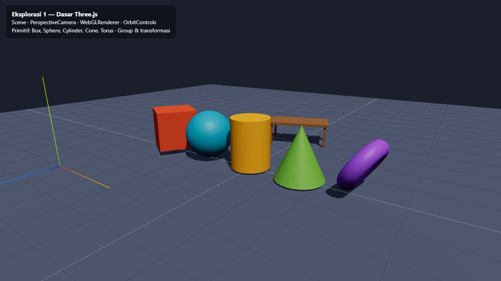
Kami membandingkan lima jenis material dengan warna yang sama. MeshBasicMaterial tidak terpengaruh cahaya. Lambert hanya menghitung diffuse. Phong menambahkan specular. Standard dan Physical memakai model PBR (physically based rendering) dengan parameter roughness dan metalness. Baris belakang menunjukkan pengaruh roughness (kiri ke kanan) dan metalness (bawah = 0, atas = 1). Agar material logam punya sesuatu untuk dipantulkan, kami membuat environment map dengan PMREMGenerator.
Sumber cahaya yang dicoba: HemisphereLight (cahaya langit dan pantulan tanah), DirectionalLight dengan bayangan (shadow map 2048²), PointLight oranye yang bergerak, dan SpotLight biru.
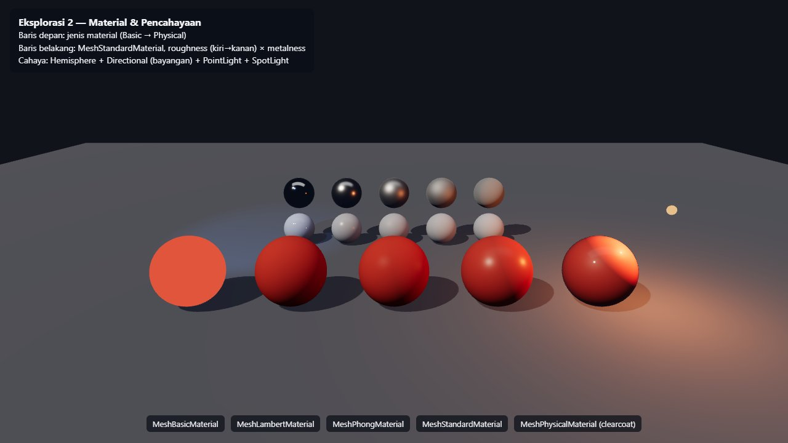
Ini eksplorasi yang paling berpengaruh pada proyek kami. Awalnya tangga putar kantin disusun dari banyak BoxGeometry yang ditumpuk dan diputar. Hasilnya permukaan saling menembus (z-fighting), ada celah di sambungan, dan banyak sisi dalam yang tertimbun. Solusinya, profil samping tangga digambar sebagai THREE.Shape 2D lalu di-extrude sebesar lebar tangga sehingga menjadi satu solid tertutup. Bordes setengah lingkaran dibuat dari Shape.absarc() yang di-extrude vertikal. toCreasedNormals membuat sisi lengkungnya halus tetapi tepinya tetap tajam.
const shape = new THREE.Shape();
shape.moveTo(-z0, 0);
for (let i = 0; i < steps; i++) { // gigi tangga: naik (rise) lalu maju (run)
shape.lineTo(-(z0 + i * run), (i + 1) * rise);
shape.lineTo(-(z0 + (i + 1) * run), (i + 1) * rise);
}
shape.lineTo(-zEnd, 0); shape.closePath();
const geo = new THREE.ExtrudeGeometry(shape, { depth: width, bevelEnabled: false });
geo.rotateY(Math.PI / 2); // sumbu-x shape → sumbu-z dunia
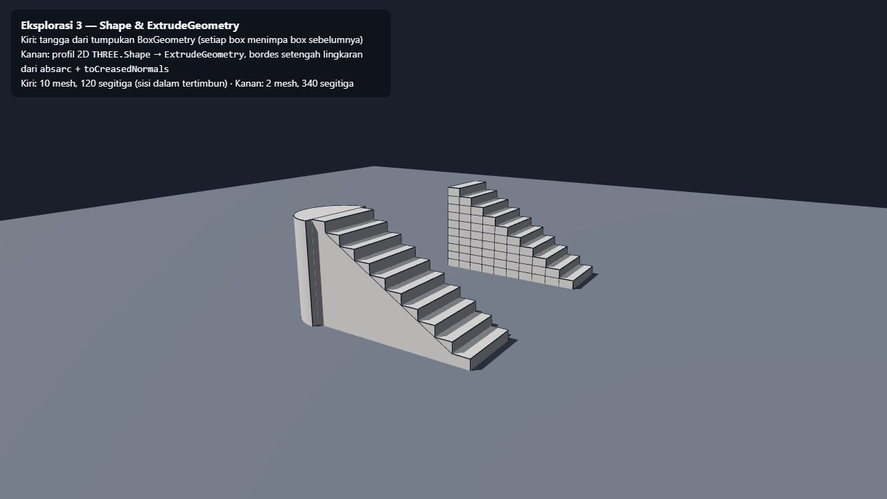
Kantin asrama punya banyak papan tulisan: PERHATIAN, jam kunjung, menu kedai, dan lain-lain. Daripada membuat gambar satu per satu, teks digambar di elemen <canvas> 2D lalu dipakai sebagai THREE.CanvasTexture. Masalah yang kami temukan: kalimat panjang terpotong di tepi papan. Kami memecahkannya dengan membungkus fillText supaya ukuran font mengecil otomatis bila teks lebih lebar dari ruang yang tersedia.
const w = ctx.measureText(text).width;
if (w > avail) ctx.font = font.replace(/(\d+)px/, (_, px) => `${(px * avail / w).toFixed(1)}px`);
const tex = new THREE.CanvasTexture(canvas);
tex.colorSpace = THREE.SRGBColorSpace; // warna canvas = sRGB
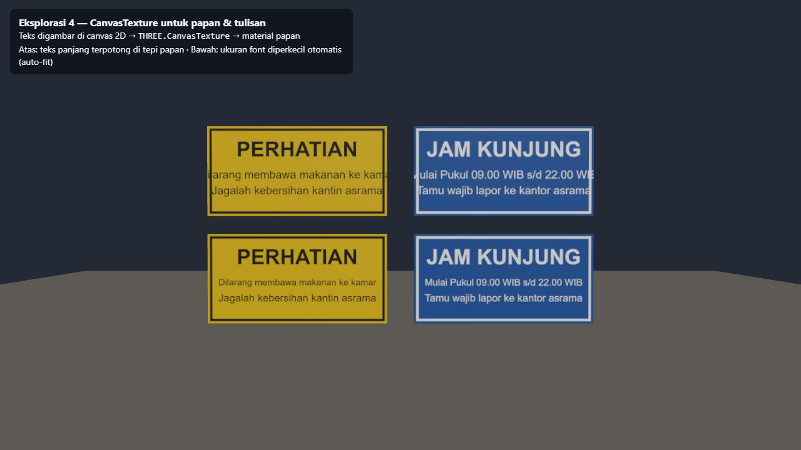
Untuk menghidupkan taman, daun pohon dan rumput dibuat bergoyang tertiup angin. Goyangan dihitung di GPU: vertex shader dari MeshStandardMaterial disisipi kode lewat material.onBeforeCompile, sehingga pencahayaan PBR dan bayangan bawaan tetap berfungsi. Besar goyangan sebanding dengan kuadrat tinggi vertex, jadi pangkal batang tetap diam. Rumput sebanyak 6.000 helai dirender dengan satu InstancedMesh: satu geometri dengan 6.000 matriks transformasi, dan hanya 1 draw call.
material.onBeforeCompile = (shader) => {
shader.uniforms.uTime = uTime;
shader.vertexShader = "uniform float uTime;\n" + shader.vertexShader.replace(
"#include <begin_vertex>",
`#include <begin_vertex>
vec4 wp = modelMatrix * vec4(position, 1.0); // posisi vertex di ruang dunia
float h = max(wp.y - minY, 0.0);
transformed.x += sin(uTime * 1.8 + phase) * strength * h * h;`);
};
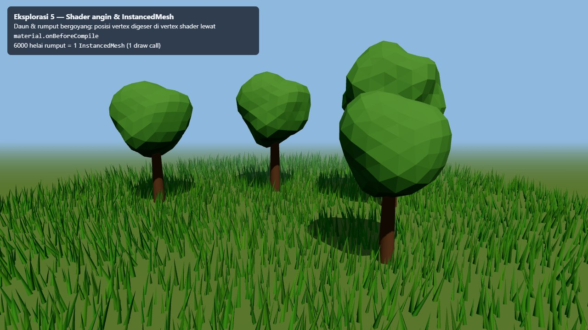
Scene kantin berisi ribuan objek kecil (meja, bangku, piring, kursi plastik, dan sebagainya). Setiap Mesh berarti satu draw call ke GPU, sehingga performa cepat turun. Di demo 6 kami membuat 240 set meja dan bangku (1.200 mesh), lalu menggabungkan semua geometri statis yang materialnya sama dengan BufferGeometryUtils.mergeGeometries. Hasilnya diukur dengan renderer.info:
| Mode | Objek mesh | Draw call |
|---|---|---|
| Individual (1 mesh per bagian) | 1.200 | 973 (sebagian terpotong frustum culling) |
| Merged per material | 2 | 3 (2 mesh + lantai) |
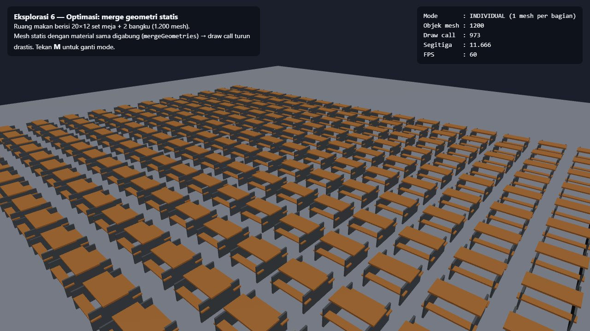
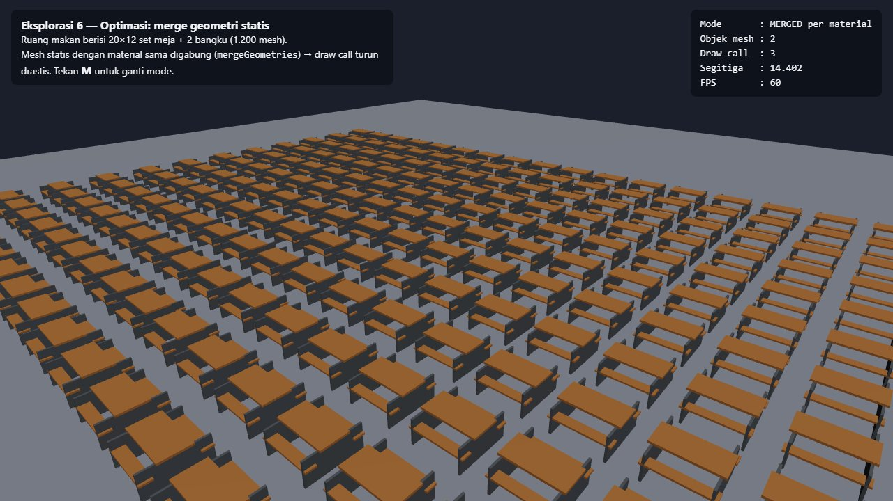
Konsekuensinya, objek yang sudah digabung tidak bisa digerakkan satu per satu. Karena itu teknik ini hanya kami pakai untuk objek statis. Objek yang bergerak (orang, daun) tetap menjadi mesh terpisah atau diberi animasi lewat shader.
Semua teknik di atas diterapkan pada scene final. Struktur kodenya:
layoutSpec.js: semua ukuran dan posisi (1 unit = 1 meter, sumbu Y ke atas, −Z = utara) disimpan dalam satu objek data. Modul pembangun (building, stalls, furniture, props, people, outdoor, dll.) membaca spesifikasi ini, jadi perubahan tata letak cukup dilakukan di satu tempat.atmosphere.js): shader langit prosedural (gradasi, matahari, awan fbm, bintang) dipanggang dengan PMREMGenerator menjadi scene.environment, sehingga baja, kaca, dan keramik memantulkan langit yang sesuai jam.reflection.js): Reflector dari addon Three.js dengan shader tambahan (Fresnel, sedikit kemiringan acak per ubin, nat yang tidak memantul).pipeline.js): EffectComposer → GTAOPass (ambient occlusion di sudut dan di bawah meja) → UnrealBloomPass (lampu berpendar) → OutputPass (tone mapping ACES + sRGB), dengan empat tingkat kualitas.optimize.js): mesh statis digabung per material seperti di demo 6. Shadow map hanya dirender ulang saat jam berubah.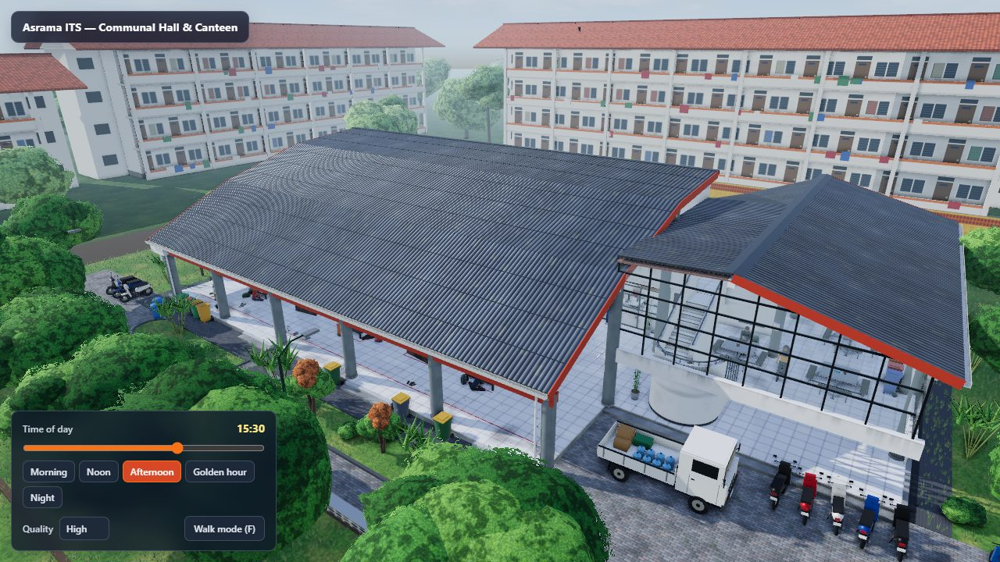
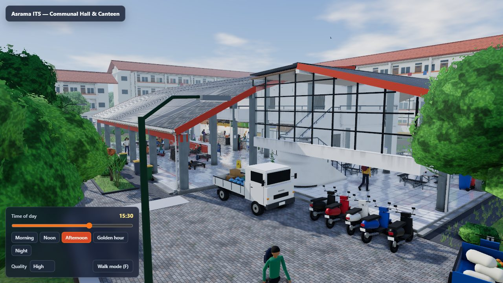
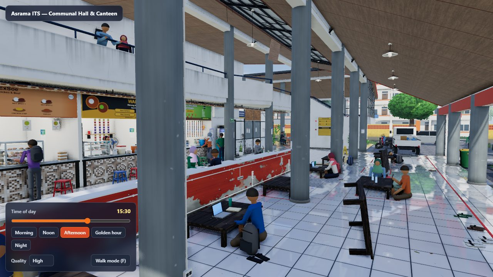
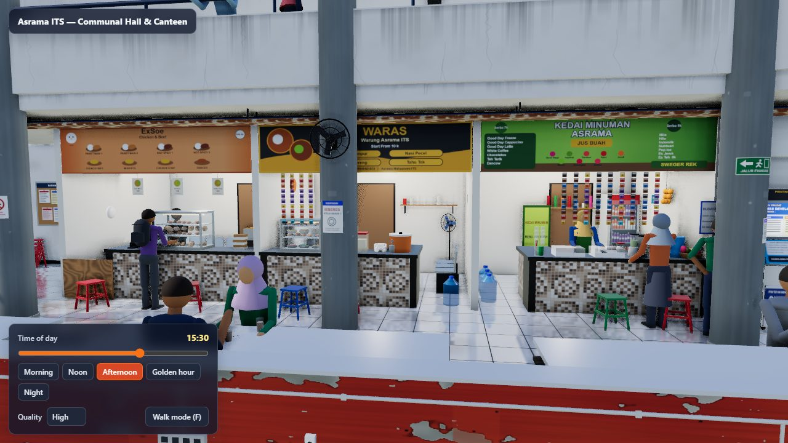
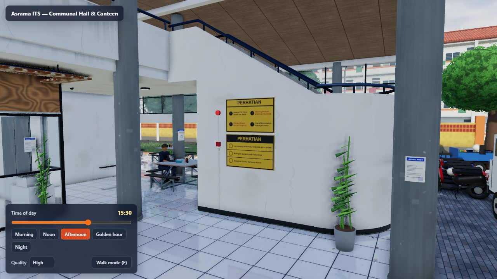
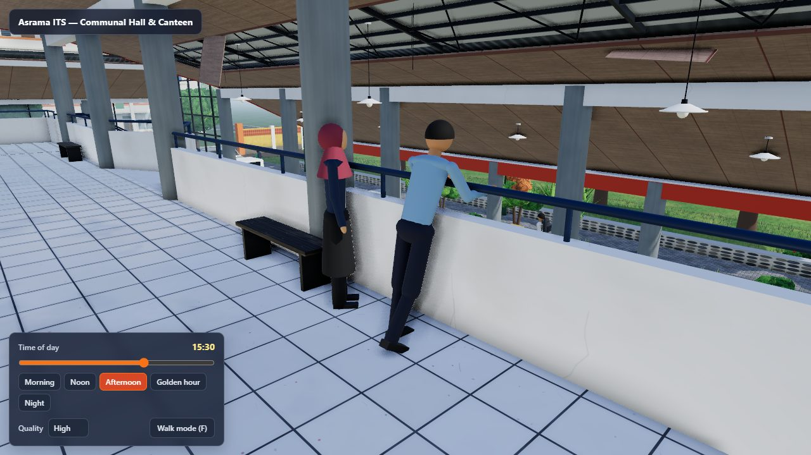
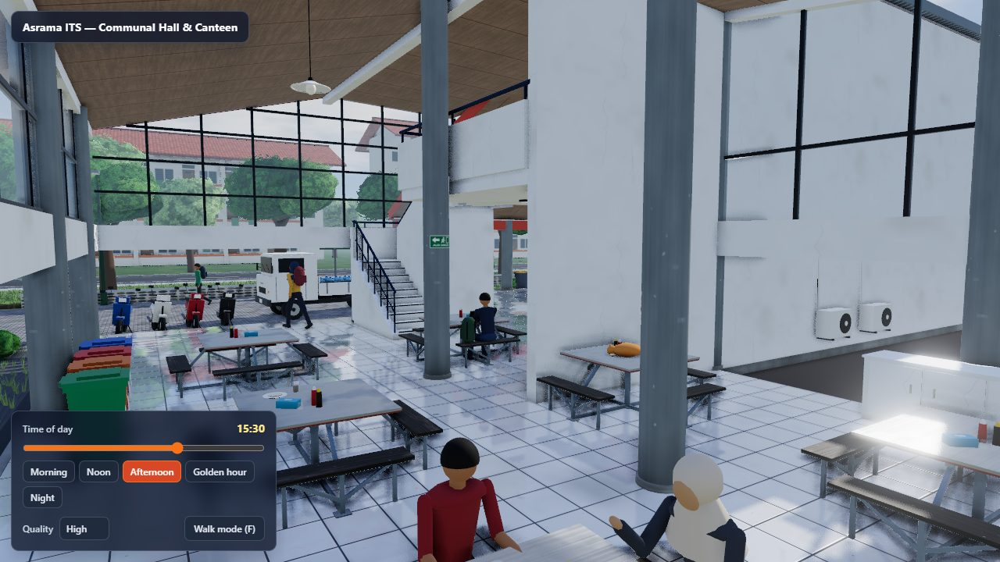
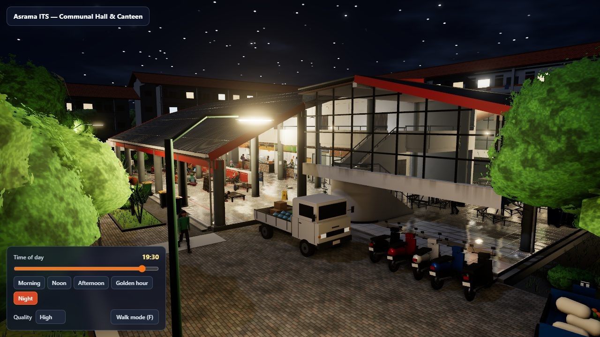
| Kendala | Solusi |
|---|---|
| Tangga tersusun dari box yang tumpang-tindih sehingga terlihat "pecah" (z-fighting, celah di sambungan) | Dibangun ulang dari profil Shape yang di-extrude dan bordes absarc (subbab 3.3) |
| Tulisan pada papan terpotong di tepi | Ukuran font disesuaikan otomatis saat menggambar ke canvas (subbab 3.4) |
| FPS rendah karena terlalu banyak draw call | Penggabungan geometri statis per material dan InstancedMesh (subbab 3.5–3.6) |
| Tata letak tidak sesuai foto: tangga menutup jalan dari kantor asrama, lorong kedai terlalu sempit | Ukuran dipusatkan di layoutSpec.js, lalu posisi tangga dan lebar lorong diubah berdasarkan foto referensi |
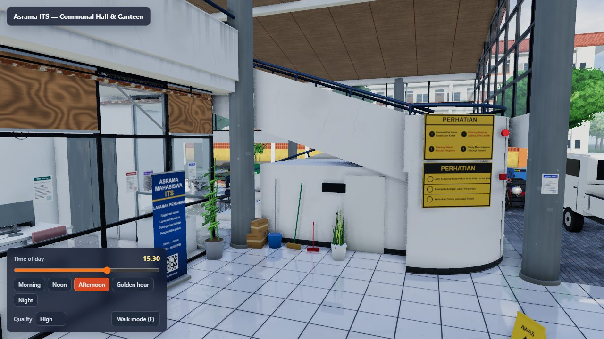
Three.js menyediakan semua yang kami butuhkan untuk memodelkan kantin asrama secara prosedural: primitif dan ExtrudeGeometry untuk bentuk, material PBR dan berbagai sumber cahaya, tekstur dari canvas, akses ke shader melalui onBeforeCompile, serta addon post-processing dan utilitas geometri untuk kualitas dan performa. Dari eksplorasi ini kami belajar bahwa memilih teknik pemodelan yang tepat (solid tertutup lawan tumpukan box) dan mengurangi draw call sama pentingnya dengan detail visual.
Rencana lanjutan:
| File | Topik |
|---|---|
eksplorasi/01-dasar.html | Scene, kamera, renderer, OrbitControls, primitif, Group |
eksplorasi/02-material-cahaya.html | Jenis material, PBR roughness/metalness, jenis cahaya, bayangan |
eksplorasi/03-extrude-tangga.html | Shape, ExtrudeGeometry, absarc, toCreasedNormals |
eksplorasi/04-canvas-texture.html | CanvasTexture dan auto-fit teks |
eksplorasi/05-shader-angin.html | onBeforeCompile (vertex shader) dan InstancedMesh |
eksplorasi/06-optimasi-merge.html | mergeGeometries dan pengukuran draw call dengan renderer.info |
Repositori: github.com/ArtanisPlays/grafkomfinalpraktikum (branch eksplorasi).